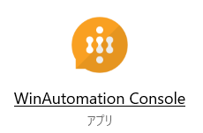
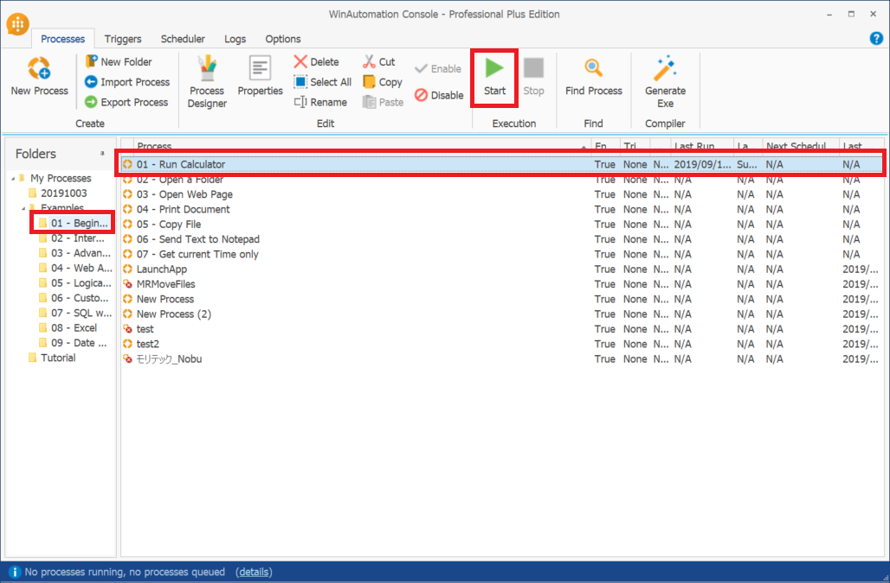
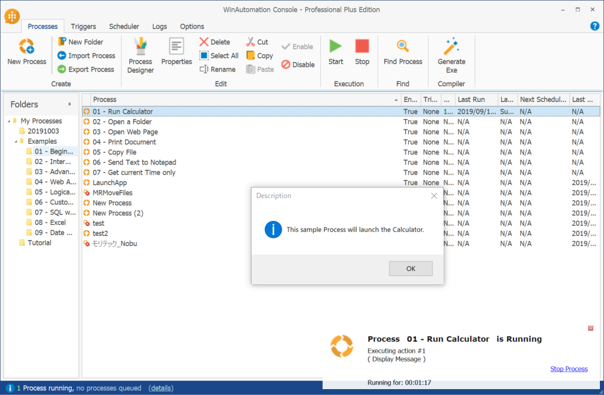
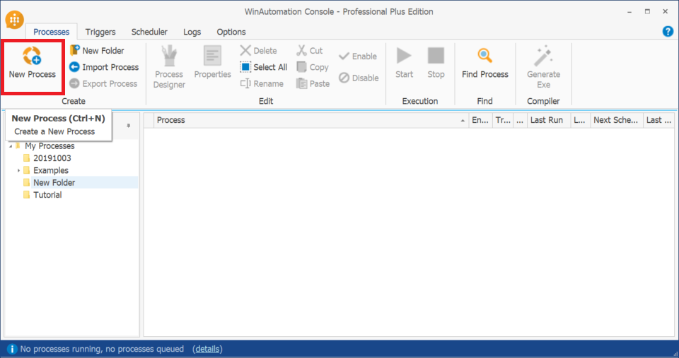
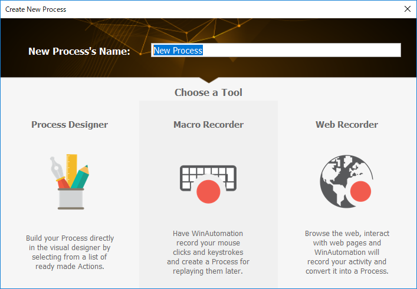
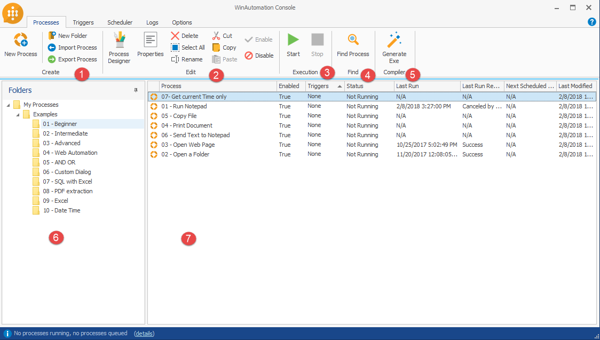
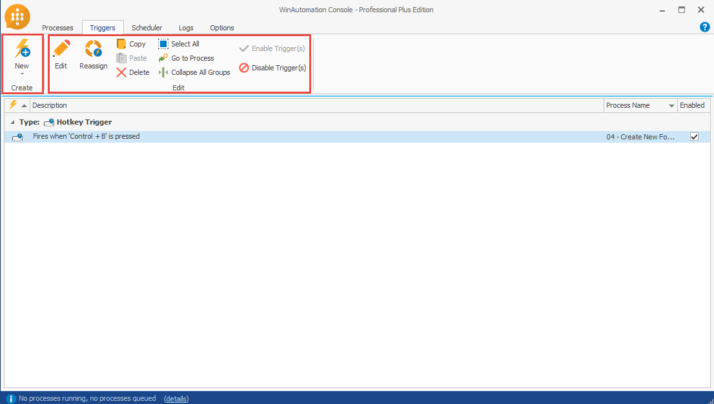
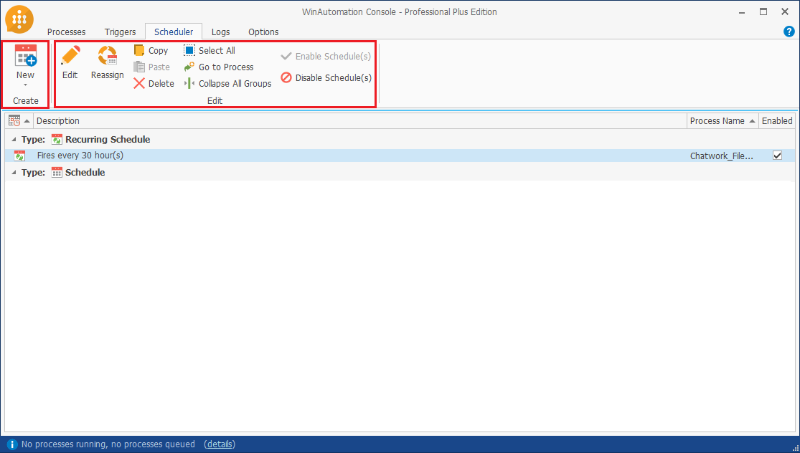
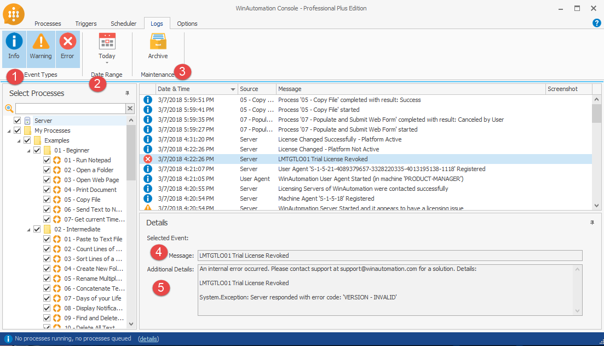
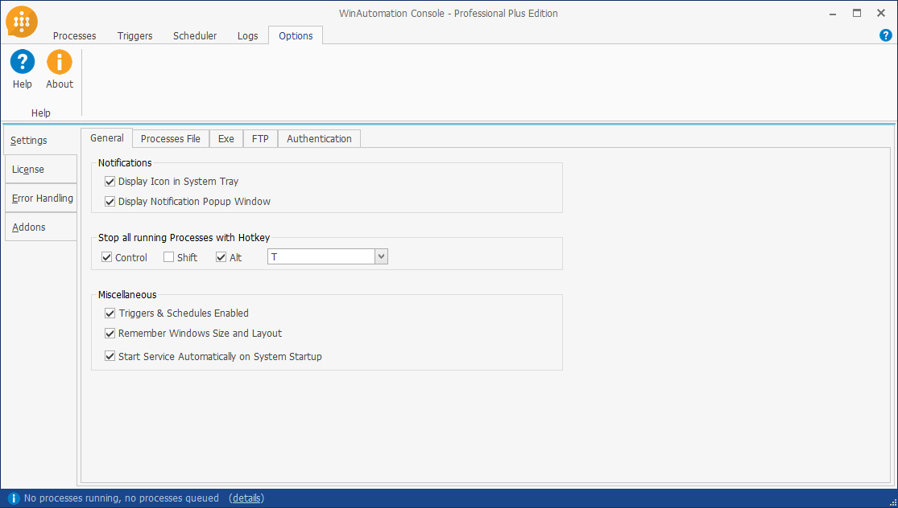

-
チュートリアル（基礎）
- RPA、RDAとは
- WinAutomationとは
- セットアップ手順
- コンソールの操作方法
- Task1 コンソールを操作してみましょう
- ProcessDesignerの操作方法
- 基本アクションについて
- Task2 アクションを設定してみましょう
- トリガー設定
- Task3 トリガーを作成してみましょう
- スケジューラー設定
- Task4 スケジューラーを作成してみましょう
- EXCEL操作
- Task5 EXCELを操作してみましょう
- マクロレコーダー
- Task6 アプリケーションを操作してみましょう
- Webレコーダー
- Task7 Webサイトを操作してみましょう
- 画像認識
- Task8 画像認識で処理を作成してみましょう
- 例外処理
- アクション一覧
- サンプル
- FAQ
- トラブルシューティング
コンソールの操作方法
トリガーの設定、ログの参照、Process Designerの起動など、WinAutomationの操作は全てWinAutomation Consoleを用いて行います。
ここではWinAutomation Consoleの基本操作を学びましょう。
起動とプロセスの実行
- デスクトップのショートカットからWinAutomation Consoleを起動してください。
デスクトップにショートカットがない場合は、プログラム一覧から起動するか、次のパスを実行してください。
C:\Program Files\WinAutomation\WinAutomation.Console.exe
 - Examples > 01 - Beginnerフォルダを選択してください。
- 01 - Run Calculatorプロセスを選択し、Startを行ってください。
 - プロセスが起動するのを確認します。
 - 表示されたメッセージを閉じ、電卓が起動するのを確認します。
プロセスの作成
どのフォルダに作成したいかを選択し、New Processボタンをクリックします。
プロセスの名称と、どのモードで作成を開始するかを選択します。

プロセスタブの概要
プロセスの作成、プロセスのプロパティ設定、プロセス手動実行などを行います。

※ 青太字はよく使う機能を表しています ※
Create Group
新しいプロセスの作成、新しいフォルダーの作成、プロセスのインポート、エクスポートなどを行います。- New Process
選択したフォルダ内に新たなプロセスの作成します。 - New Folder
選択したフォルダ内に新たなフォルダを作成します。 - Import Process
出力されたプロセス（wajファイル）の取り込みを行います。
ドラッグアンドドロップでも同様の操作が可能です。 - Export Process
選択したプロセスをwajファイルとして出力します。（wajファイル）
- New Process
Edit Group
Process Designerでのプロセス編集や、そのプロパティ設定、プロセスの削除、名前の変更、切り取り、コピー、貼り付けなどを行うことができます。- Process Designer
Process Designerを起動し、選択したプロセスの編集を行います。 - Properties
プロセスに対して、説明文の設定のほか、同時実行を制御したり、パスワードによる保護、セキュアスクリーン（実行中の画面を見えないようする）などの設定が可能です。 - Delete
選択したフォルダまたはプロセスの削除を行います。
一度削除したフォルダ及びプロセスは復元できませんので、十分にご注意ください。 - Select All
選択したフォルダ内の全プロセスを選択します。
一括でエクスポートする際などに使用します。 - Rename
選択したフォルダまたはプロセスの名称を変更します。 - Cut
選択したフォルダまたはプロセスを別のフォルダに移動するために切り取りします。 - Copy
選択したフォルダまたはプロセスをコピーします。
コピー元のプロセスにトリガー、スケジュールが設定されている場合、新たにトリガー、スケジュールが作成され、紐づけが行われます。
WinAutomationにはバージョン管理機能が無いため、編集前にコピーを作成しておくことを推奨します。 - Paste
コピーまたは切り取りしたフォルダ・プロセスを選択したフォルダに複製します。 - Enable
Disableに設定されたプロセスをEnable（有効化）に設定します。 - Disable
選択したプロセスをDisable（無効化）に設定します。 無効化されたプロセスはトリガーなどで実行が行われなくなります。
- Process Designer
Execution Group
コンソールから手動でプロセスを実行、停止を行うことが可能です。- Start
選択したプロセスを手動で実行します。 - Stop
選択したプロセスが実行中の場合、対象のプロセスを中断します。
- Start
Find
プロセスの検索が可能です。- Find Process
プロセス名の一部を指定してプロセスの検索を行います。
- Find Process
Compiler
任意のマシンで実行できるスタンドアロンの実行可能ファイル（*.exe）を作成できます。- Generate Exe
WinAutomation Consoleを起動せずに実行できる実行可能ファイル（*.exe）の作成を行います。
実行の履歴はLogsに記録されず、また作成した実行可能ファイルは、ライセンスがないPCでは実行できません。
- Generate Exe
The Processes Folders List pane
フォルダを選択すると、フォルダに保存されたプロセスが右側のプロセスペインに表示されます。右クリックメニュー（ボタンメニューと異なる機能のみ記載）
- Collapse All But This
選択したフォルダに子の階層があり、展開されている場合、展開を縮小（非表示）します。
- Collapse All But This
The Processes List pane
このペインでは、特定のフォルダーに保存されているすべてのプロセスを確認できます。
表示されたプロセスをダブルクリックすると、Process Designerが起動し、保存済みプロセスの編集が可能となります。右クリックメニュー（ボタンメニューと異なる機能のみ記載）
- Edit Process
選択したプロセスを編集します。
ダブルクリックと同様です。 - Add Trigger on Process
選択したプロセスにトリガーを設定します。 - Add Schedule on Process
選択したプロセスにスケジュールを設定します。 - Show Logs For Process(es)
選択したプロセスのログを表示します。 - Show Triggers of Process(es)
選択したプロセスに設定されたトリガーを表示します。 - Show Schedules of Process(es)
選択したプロセスに設定されたトリガーを表示します。
- Edit Process
トリガータブの概要
指定したフォルダ内のファイルの作成や変更、削除などを感知してロボットを起動できるようにするファイルトリガー、 特定のメールの受信によって起動するメールトリガーなど、 特定イベントでロボットを実行するための設定を行います。

Create Group
新たにトリガーの作成を行います。New
トリガー一覧の中から、任意のトリガーの作成を行います。Email Monitor Trigger
Event Log Monitor Trigger
File Monitor Trigger
Idle Monitor Trigger
Hotkey Trigger
Ping Trigger
Service Monitor Trigger
Process Monitor Trigger
Edit Group
作成済みのトリガーの設定変更などが可能です。- Edit
選択したトリガーの編集を行います。 ダブルクリックと同様です。 - Reassign
選択したトリガーで実行するプロセスを変更します。
なお、1つのトリガーに複数プロセスを紐づけることは出来ません。 - Copy
選択したトリガーをコピーします。 - Paste
コピーしたトリガーを貼り付けます。 - Delete
選択したトリガーの削除を行います。 - Select All
全トリガーを選択します。 - Go to Process
選択したトリガーに紐づいたプロセスを表示します。 - Collapse All Group
全てのトリガーの展開を縮小（非表示）します。 - Enable Trigger
Disableに設定されたトリガーをEnable（有効化）に設定します。 - Disable Trigger
選択したトリガーをDisable（無効化）に設定します。
- Edit
スケジュールタブの概要
指定した日時での実行、数分おきに繰り返し実行など、時間軸での実行制御を行います。

Create Group
新たにスケジュールの作成を行います。New
スケジュール、繰り返しスケジュールの中から、スケジュールの作成を行います。Schedule
Recurring Schedule
Edit Group
作成済みのトリガーの設定変更などが可能です。- Edit
選択したスケジュールの編集を行います。 ダブルクリックと同様です。 - Reassign
選択したスケジュールで実行するプロセスを変更します。
なお、1つのトリガーに複数スケジュールを紐づけることは出来ません。 - Copy
選択したスケジュールをコピーします。 - Paste
コピーしたスケジュールを貼り付けます。 - Delete
選択したスケジュールの削除を行います。 - Select All
全スケジュールを選択します。 - Go to Process
選択したスケジュールに紐づいたプロセスを表示します。 - Collapse All Group
全てのスケジュールの展開を縮小（非表示）します。 - Enable Schedule(s)
Disableに設定されたスケジュールをEnable（有効化）に設定します。 - Disable Schedule(s)
選択したスケジュールをDisable（無効化）に設定します。
- Edit
履歴タブの概要
指定した日時での実行、数分おきに繰り返し実行など、時間軸での実行制御を行います。

Event Types
Info（情報）、Warning（警告）、Error（エラー）から、絞り込みたいイベント種別を選択します。Date Range
ログが記録された日付の範囲を指定します。Maintenance
表示された履歴情報を出力します。Message
ログに記憶されたメッセージが表示されます。Additional Details
ログに記録された詳細（エラーの詳細など）が表示されます。
オプションタブの概要
WinAutomation全体の設定やライセンス設定などを行います。

Help
ヘルプ（英語）を起動します。About
WinAutomation Console起動時に表示されるスプラッシュ画面（バージョンなどが記載された画面）を表示します。Settings
- General
ロボット実行時の右下のポップアップの表示設定、ウィンドウサイズの記憶などの設定を行います。 - Processes File
プロセスファイルのバックアップ、復元などを行います。
プロセスファイルが破損した場合、作成したプロセスなどは復元出来なくなるため、定期的なバックアップを実施してください。 - Exe
使用しません。 - FTP
FTPで送信可能なファイル形式を設定します。 - Authentication
ログインユーザー設定を行います。
未設定の場合、ログオフ状態からのトリガー、スケジュールによる実行は出来ません。
また共有サーバーに対して設定したファイルトリガーなどが正しく動作しない場合があります。
- General
License
ライセンス情報の設定を行います。Error Handling
Behaviour
エラー発生時の振る舞いを設定します。- Send Email
エラー発生時、設定したメールアドレスに対し、エラーメールを送信します。
利用にはSMTPサーバー設定が必要となります。 - Run Another Process
エラー発生時に指定したプロセスを起動します。
例えば、画面にエラー発生を知らせるようなウィンドウを表示する際に使用します。 - Write Event to Text File
指定したパスにエラーテキストを出力します。 - Record Event to Windows Event Log
エラーの内容をWindowsのイベントログに記録します。 - Add Screenshot to Logs
エラーが発生した瞬間のスクリーンショットを履歴に記録します。
- Send Email
Email/SMTP
エラーメールを送信するための、SMTPサーバー情報の設定を行います。
Addons
使用しません。